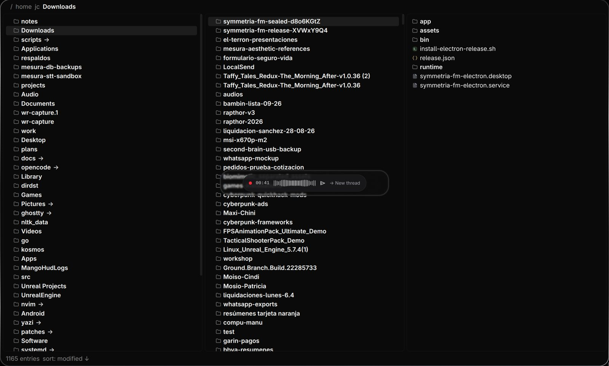
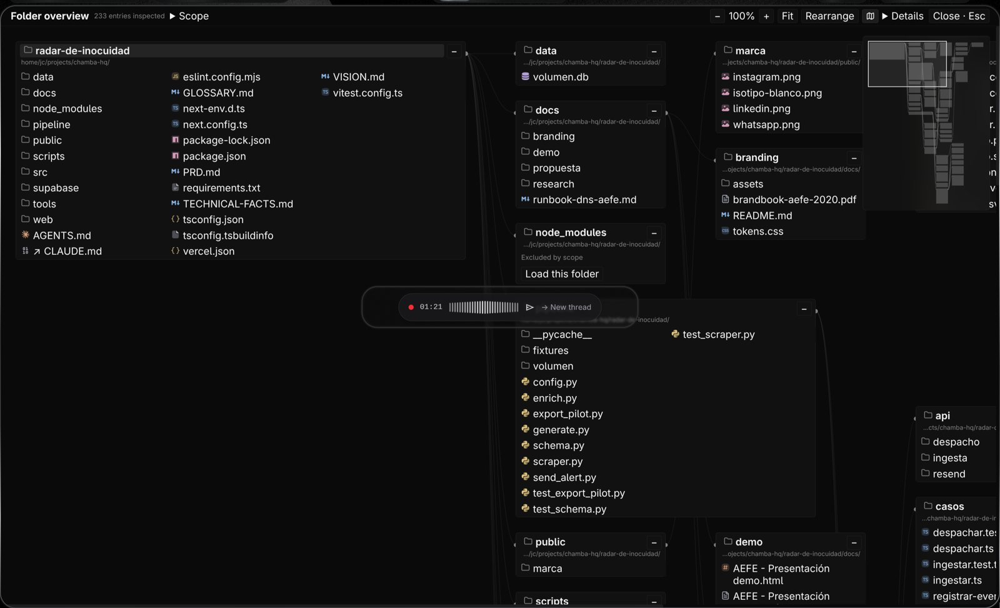
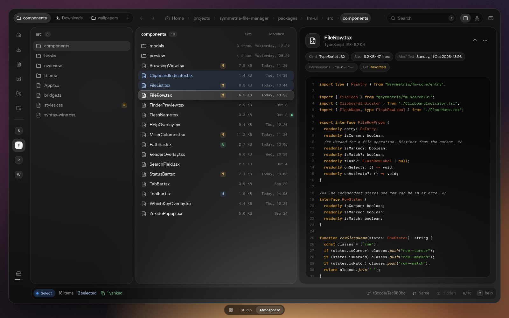
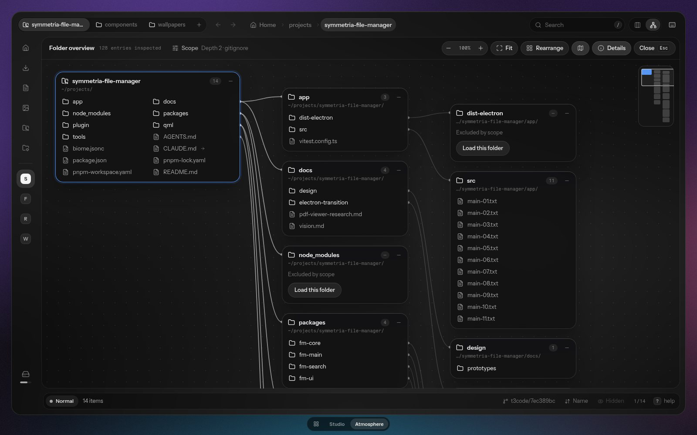
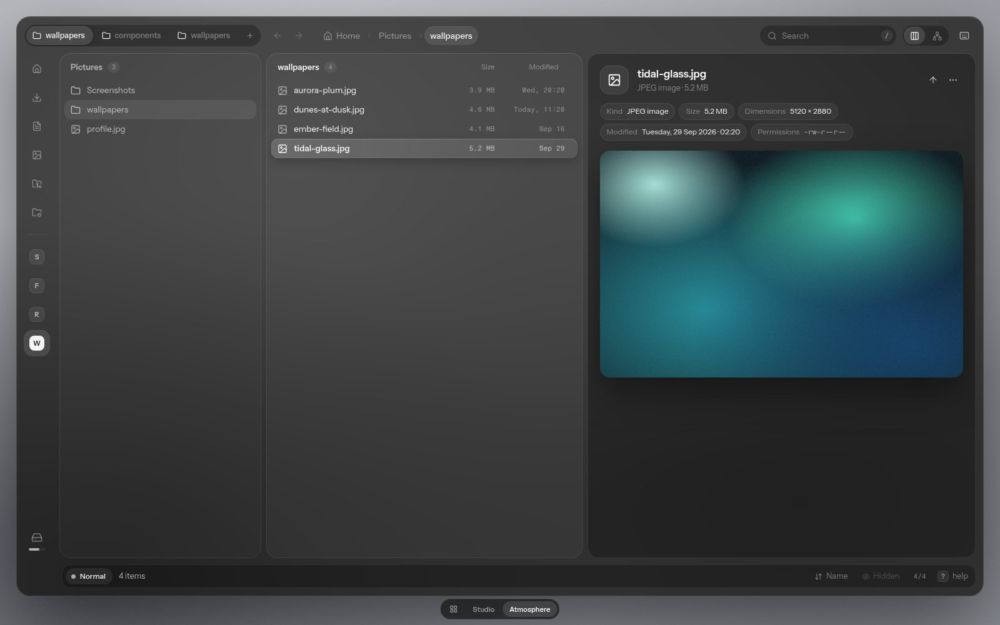
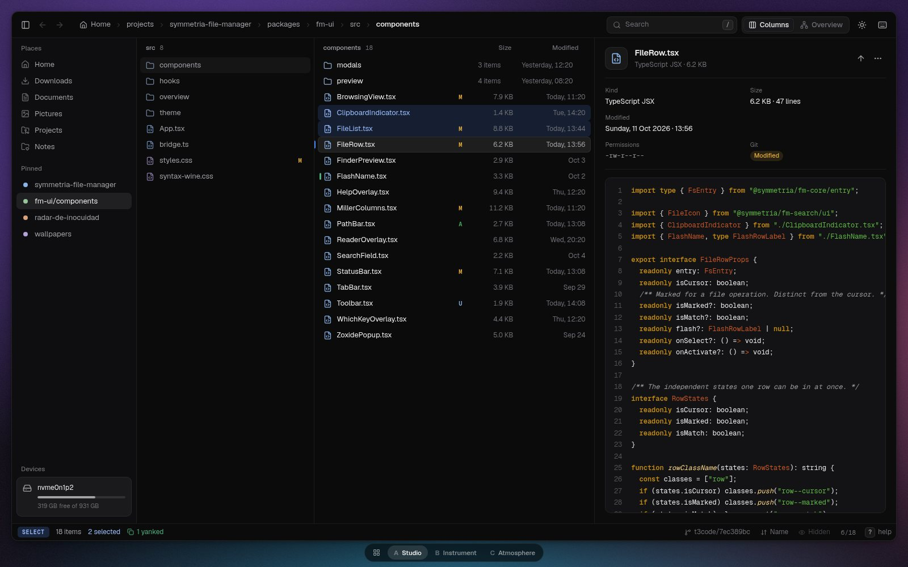
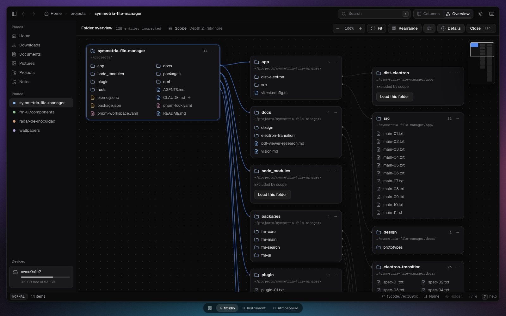
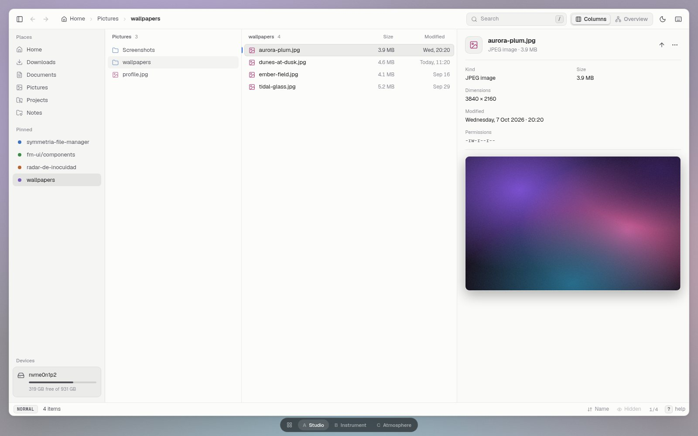

A more professional
file manager
Two working prototypes, not mockups. The chosen design is written down in docs/design/atmosphere-design-system.md. Atmosphere is the lead, revised to a neutral black-and-white theme; Studio stays as the alternative. Instrument was dropped. Each one runs the same keyboard map, the same mock file system and the same previews, so the only difference you compare is the design. Open one, then drive it with j k h l.
Where the app is today


- The type is large and has no hierarchyEvery name is 16px Rubik, at one weight and one colour, in all three columns. The eye cannot tell where you are from where you came from.
- No metadataA file manager answers "how big?" and "how old?". Today the rows show names only, and the preview of a file shows no kind, size, date or permissions.
- The cursor is weakAn 8% grey fill on near-black. It is the most important element on screen and the hardest to see.
- The chrome has no shapeThe breadcrumb, the status line and the overview controls are plain text. Nothing looks clickable, so the app reads as unfinished.
- Black cards on blackThree panes with near-invisible edges, separated by thin gaps. They neither join into one surface nor stand apart as cards.
- The overview is dense but flatCards, paths and links all have the same weight. The focused card and its links do not stand out.
The directions
Both fix the six problems above. They differ in personality.



Atmosphere
Frosted glass on the Hyprland desktop, now in black and white.
- No tint. Every glass surface blurs the wallpaper in greyscale (
saturate(0)), so a sunset wallpaper and a grey one give the same neutral window. Only brightness passes through. - Colour means something. Blue is selection and focus. Green, red and amber are utilities: yanked, cut or destructive, git-modified. Nothing else has a hue.
- Monochrome icons. Folders are bright, files are dim. Pinned folders are monograms, not coloured dots.
- More information per row: size and modified date. The date hides first when the column gets narrow.
- Icon rail, pill tabs and breadcrumb, a hero preview, and a floating status bar, as before.



Studio
Real desktop software, in the same family as Mesura Code.
- Neutral near-black, with Mesura Code's blue as the only accent. Blue means "focus".
- One continuous surface split by hairlines, plus a sidebar with places, pinned folders and disk usage.
- Toolbar with back and forward, a breadcrumb with clickable segments, a search field and a view switch.
- The preview is an inspector: identity, a grid of properties, then the content.
- Has a light theme (T), because Mesura Code has one.
What both share
These parts belong to the design system whichever direction wins.
Try these keys
Good places to look: ~/Downloads (start), gs for a repository with git states, gw for image previews, and ~/Downloads/audios for the audio player.